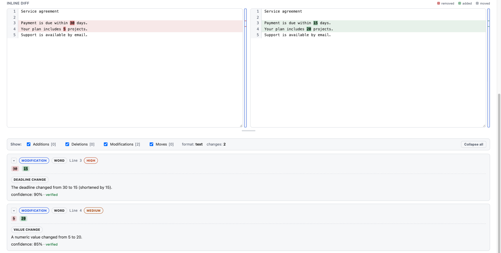
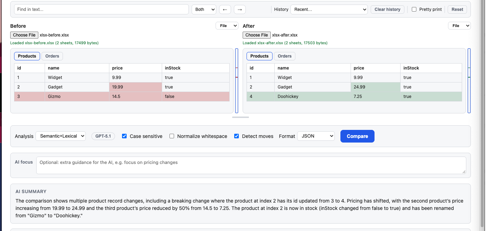
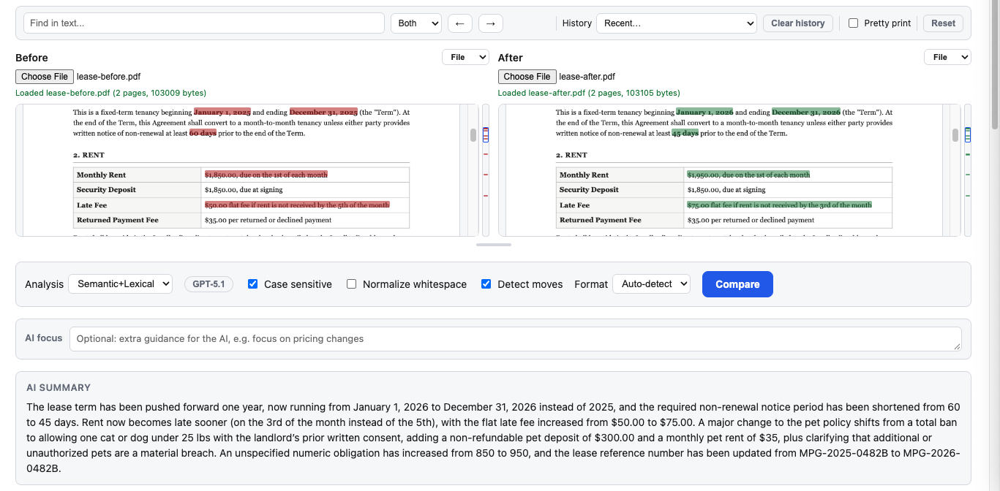
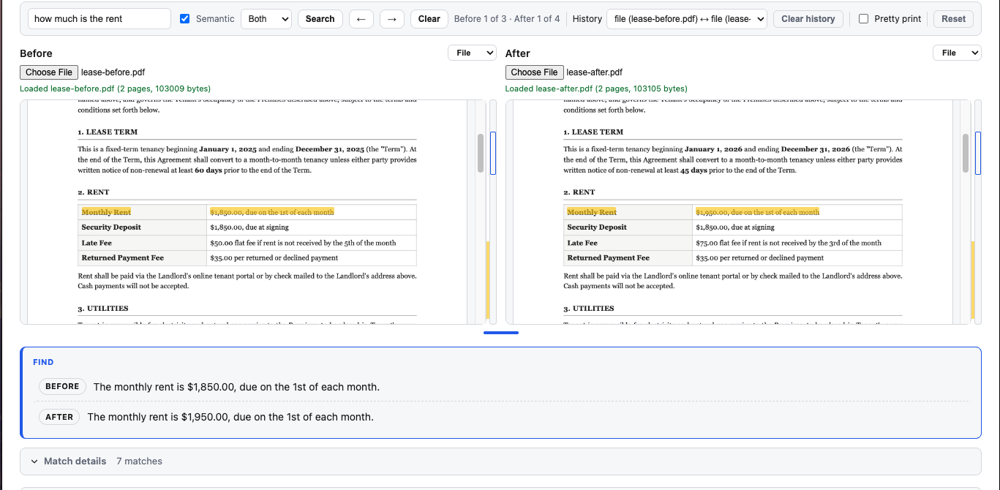

What you want.
AI document and text comparison: a clear answer to “what’s different between these two versions?” for text, documents, and PDFs.
The goal Open DiffFind
Open DiffFind
Compare text, documents, PDFs, structured data, and API requests using deterministic diffing and AI-powered semantic analysis.
Traditional diff tools tell you which words changed. DiffFind combines precise deterministic comparison with AI-powered semantic analysis to help you understand whether the meaning changed too.




Compare more than text
Deterministic comparison shows what changed.
AI helps explain what it means.
AI document and text comparison: a clear answer to “what’s different between these two versions?” for text, documents, and PDFs.
The goalIt finds the exact differences and the meaningful differences, so a reworded sentence is not mistaken for a changed obligation, and a single changed number is not buried.
Exact + meaningfulA deterministic, repeatable lexical comparison finds every change. Optional semantic analysis and AI then assess whether the meaning changed. AI adds to the precise diff; it never replaces it.
Deterministic + AIWhy it matters: you can understand not only what changed, but what those changes mean. No knowledge of embeddings, semantic search, or RAG required.
See it in motion
A quick tour of comparing, exploring, and understanding changes.
Clarity in every comparison
See additions, deletions, and moved text
with the surrounding context.
Compare by character, word, sentence, line, or paragraph. Track additions, removals, and moved text without losing the context.
Precision firstOptional AI analysis highlights material changes and explains their likely impact. Cited facts are checked against your source documents, with verification status shown.
AI insight backed by evidenceCompare the structure of JSON, YAML, XML, and CSV. Load local PDFs to see changes highlighted on the page, or Excel spreadsheets (XLS/XLSX, Excel’s file formats) to compare every sheet at once.
Built for real documentsExplore: Text Compare Semantic Diff PDF Comparison Excel Comparison Word Comparison JSON Compare YAML Compare XML Compare CSV Compare URL Compare cURL Compare API Compare Document Comparison Diffchecker Alternative
Semantic Find
AI document search that works even when
the wording is different.
Semantic Find understands the intent of your search and can locate relevant content even when the document uses different terminology. Ask “how much is the rent” and find the passage that says “monthly lease payment.”
AI document searchRun the same semantic document search across two versions of a document to see how the answer changed.
Semantic search + comparisonUse exact keyword matching when you know the words, and semantic search when you know the idea.
Your choiceFor every kind of user
You don't need to be technical to see what changed.
DiffFind is built for however you work.
Compare contracts, invoices, budgets, and policy documents side by side, and see exactly which terms or figures changed before you sign off.
No training requiredCheck what changed between two drafts of a resume, email, or article without digging through manual redlines.
Just paste and compareFine-tune every comparison option by hand, or automate it entirely with cURL commands (command-line web requests), a REST API (a standard web API), and agent-ready functions (tools AI agents can call directly).
API includedFrom difference to understanding
Paste text, choose a file, or load content from a URL or cURL command.
Choose your format and comparison options. Explore the differences side by side.
Add optional semantic analysis (AI-based meaning analysis) to explore meaning, severity, and verified details.
Under the hood, DiffFind uses established text-comparison techniques; see this overview of the diff algorithm.
For the way you build
Bring precise comparison to your own tools with a REST API (a standard web API) and agent-ready functions (tools AI agents can call directly). Compare documents, find material changes, and detect breaking changes. Compare API requests and API responses by feeding it a file, a URL, or a cURL command — no manual copy-pasting required. See API comparison, cURL compare, and JSON diff.
Explore the OpenAPI specificationBackground: OpenAPI specification standard · cURL documentation
// POST /v1/compare
{
"before": "Payment is due in 30 days.",
"after": "Payment is due in 15 days."
}Common questions
Quick answers about privacy, formats,
AI analysis, and the API.
AI document comparison finds the exact differences between two versions of a document and then helps you understand whether the meaning changed too. DiffFind combines a deterministic, repeatable comparison that shows what changed with optional AI-powered semantic analysis that helps explain what it means. See document comparison and semantic diff.
Yes. Load two URLs or two cURL commands to compare API responses, or paste JSON, YAML, or XML payloads to compare API requests and responses by path. You can also automate comparisons through the DiffFind REST API. See API comparison, cURL compare, and URL compare.
Semantic Find lets you search documents by meaning, not just exact words. It understands the intent of your search and can locate relevant passages even when the document uses different terminology. See semantic search and semantic document search.
Not by default. Text you enter on this page goes to the DiffFind app only when you click Find difference, and nothing is stored on this page. In the app, content submitted for comparison is processed to return a result and is not retained beyond what is needed to do so, unless you choose to save it, such as comparison history stored in your browser. See the privacy policy.
DiffFind compares plain text, JSON, YAML, XML, CSV, PDF, Excel spreadsheets (XLS and XLSX), and Word documents (DOCX). You can also load content from a URL or a cURL command.
Semantic analysis is optional AI-based meaning analysis. It highlights material changes and explains their likely impact. Cited facts are checked against your source documents, and the verification status is shown.
No. The core comparison is consistent and repeatable and works without AI. Semantic analysis is an optional layer you can add when you want to understand what a change means.
You can compare by character, word, sentence, line, or paragraph, and see additions, removals, and moved text with surrounding context.
Send a POST request to /v1/compare with your before and after content. The full request format is described in the OpenAPI specification at app.difffind.com/openapi.json.
The difference is in the details
Your documents have a story. See what changed — and understand what it means.